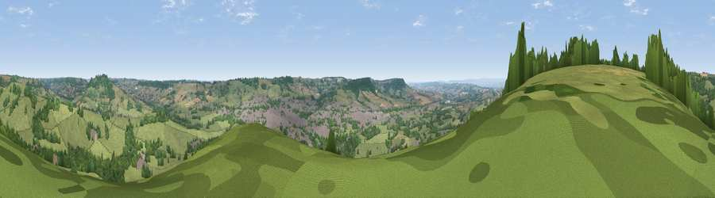

Viewpoint near Combe Raleigh
#15270 in England · top 28% of its area beats it · near Combe RaleighWhere it is
The exact computed spot (ST 15175 01975). Click the marker for map links.
The view, rendered

A 360° render of this exact spot computed from the terrain model, tree cover and land cover — summer colours, afternoon light, calibrated against photographs of famous viewpoints. Real trees, hedges and buildings will differ in detail.
The panorama
Grey silhouette: terrain skyline in each direction (720 bearings, Earth curvature and refraction included). Dashed green: skyline with trees (+15 m) and buildings (+8 m) as obstacles. Blue strip: how far the ground is visible on each bearing.
Where the view opens
Wedge length = distance to the farthest visible ground on that bearing (vegetation-aware). Rings at 10, 25 and 50 km.
What fills the view
55% grassland · 37% woodland · 5% built-up · 2% cropland
Angular shares of the visible panorama (visual magnitude), not map area. Landscape diversity 0.41 (0–1 Shannon).
Key numbers
More beautiful places nearby
The staircase of upgrades: each row has a higher view potential than everything closer. Driving times are estimates from straight-line distance, calibrated against real road routing — check an actual route before setting out.
| Place | Direction | Drive | Score |
|---|---|---|---|
| Buckerell Knap | WSW · 2 km | ~6 min | 59.5 |
| Viewpoint near Beacon | NE · 3 km | ~8 min | 63.1 |
| Viewpoint near Gittisham | S · 4 km | ~8 min | 64.8 |
| Hembury | WNW · 4 km | ~9 min | 75.9 |
| Viewpoint near Tipton St John | SSW · 12 km | ~22 min | 81.5 |
| Viewpoint near Colaton Raleigh | SSW · 16 km | ~28 min | 82.1 |
| Viewpoint near Sidmouth | SSW · 16 km | ~28 min | 83.0 |
| High Peak | SSW · 17 km | ~29 min | 85.3 |
50.81109, -3.20532 · source: screening · position refined by local search. Computed location — check access rights before visiting.